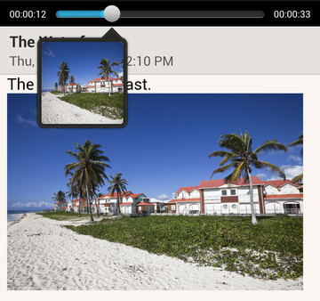

Playing an audio recording in Notes
After recording a meeting, you can listen to the audio clip to review key points.
If you took notes while audio recording, 'timemarks' (small colored nodes in the audio bar) are added to pin your notes within the audio recording's time frame.
- Open a note where you have recorded a voice clip.
-
Tap
 to play the audio recording.
to play the audio recording.
-
Tap or to go to the next or previous timemark.
When you're moving from one timemark to another, you'll see a note thumbnail for a quick preview of what you noted down while recording.

Tip: You can also tap a particular item on your note to jump to its timemark and hear the audio you've recorded at that time.